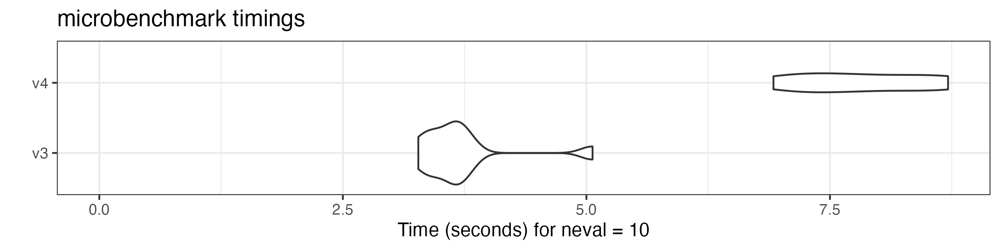
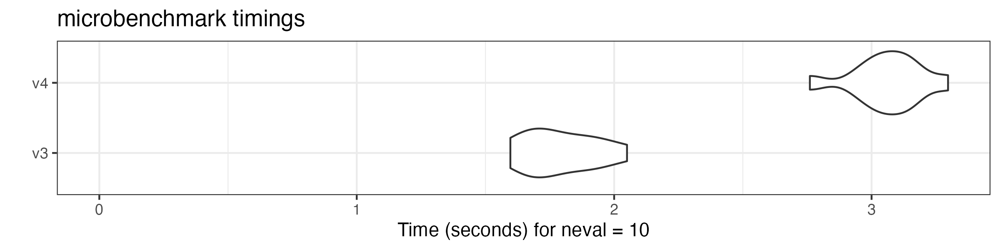
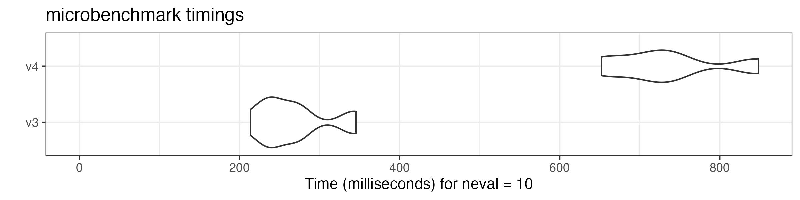
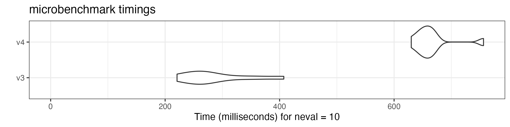
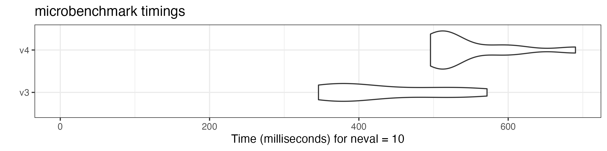
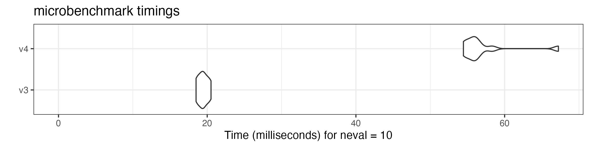
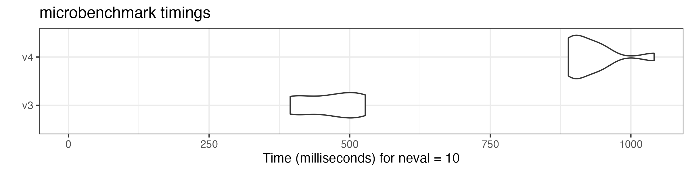
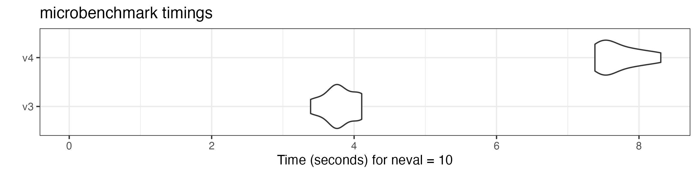

vignettes/pkgdown/benchmarks_xptr.Rmd
benchmarks_xptr.Rmdquanteda version 4.0 can process textual data
significantly faster than its earlier versions thanks to the
tokens_xptr object and a new glob pattern matching
mechanism. More information on the features and advantages of the new
xptr object are available in a separate vignette.
How we performed the comparison: We created the quanteda3 package from quanteda version 3.3 and compared it with version 4.0 on a Windows laptop with AMD Ryzen 7 PRO processor (8 cores). We used sentences from 10,000 English-language news articles in this benchmarking.
We repeated the same operation using different versions of the same functions to get the distribution of execution time. The result shows that the execution time of many v4.0 functions is about half of their version 3.3 counterparts.
# remotes::install_github("quanteda/quanteda3")
library("quanteda")
library("ggplot2")
# create text corpus
corp <- corpus_reshape(data_corpus_guardian)
# tokenize corpus
toks <- tokens(corp, remove_punct = FALSE, remove_numbers = FALSE,
remove_symbols = FALSE)
# transform tokens object to tokens_xptr object
xtoks <- as.tokens_xptr(toks)
ndoc(toks) # the number of sentences
## [1] 200254
sum(ntoken(toks)) # the total number of tokens
## [1] 5320339Although the v4 tokenizer is more flexible, its speed is roughly the
same as v3 tokenizer. The shorter execution time of the version 4 is due
to the faster removal of punctuation marks, numbers and symbols. We
compare the performance by tokenizing the corpus with the
tokens() function from quanteda version
version 4.0 and 3.3 (“v4” and “v3” in the plots, respectively).
microbenchmark::microbenchmark(
v3 = quanteda3::tokens(corp, remove_punct = TRUE, remove_numbers = TRUE,
remove_symbols = TRUE),
v4 = tokens(corp, remove_punct = TRUE, remove_numbers = TRUE,
remove_symbols = TRUE),
times = 10
) |> autoplot(log = FALSE)
## Warning in microbenchmark::microbenchmark(v3 = quanteda3::tokens(corp,
## remove_punct = TRUE, : less accurate nanosecond times to avoid potential
## integer overflows
as.tokens_xptr() is inserted before the v4 functions to
keep the original tokens_xptr object intact.
# generate n-grams
microbenchmark::microbenchmark(
v3 = quanteda3::tokens_ngrams(toks),
v4 = as.tokens_xptr(xtoks) |>
tokens_ngrams(),
times = 10
) |> autoplot(log = FALSE)
# lookup dictionary keywords
microbenchmark::microbenchmark(
v3 = quanteda3::tokens_lookup(toks, dictionary = data_dictionary_LSD2015),
v4 = as.tokens_xptr(xtoks) |>
tokens_lookup(dictionary = data_dictionary_LSD2015),
times = 10
) |> autoplot(log = FALSE)
# remove stop words
microbenchmark::microbenchmark(
v3 = quanteda3::tokens_remove(toks, pattern = stopwords("en"), padding = TRUE),
v4 = as.tokens_xptr(xtoks) |>
tokens_remove(pattern = stopwords("en"), padding = TRUE),
times = 10
) |> autoplot(log = FALSE)
# compound tokens
microbenchmark::microbenchmark(
v3 = quanteda3::tokens_compound(toks, pattern = "&", window = 1),
v4 = as.tokens_xptr(xtoks) |>
tokens_compound(pattern = "&", window = 1),
times = 10
) |> autoplot(log = FALSE)
# group sentences to articles
microbenchmark::microbenchmark(
v3 = quanteda3::tokens_group(toks),
v4 = tokens_group(xtoks),
times = 10
) |> autoplot(log = FALSE)
Combining tokens objects using c() is also substantially
faster.
# get first 5000 documents
toks1 <- head(toks, 5000)
# get last 5000 documents
toks2 <- tail(toks, 5000)
# transform both objects to tokens_xptr objects
xtoks1 <- as.tokens_xptr(toks1)
xtoks2 <- as.tokens_xptr(toks2)
# combine tokens objects
microbenchmark::microbenchmark(
v3 = quanteda3:::c.tokens(toks1, toks2),
v4 = quanteda:::c.tokens_xptr(xtoks1, xtoks2),
times = 10
) |> autoplot(log = FALSE)
We also compare the speed of constructing a document-feature matrix (DFM) using tokens objects.
microbenchmark::microbenchmark(
v3 = quanteda3::dfm(toks),
v4 = dfm(xtoks),
times = 10
) |> autoplot(log = FALSE)
microbenchmark::microbenchmark(
v3 = quanteda3::tokens(corp) |>
quanteda3::tokens_remove(stopwords("en"), padding = TRUE) |>
quanteda3::dfm(remove_padding = TRUE),
v4 = tokens(corp, xptr = TRUE) |>
tokens_remove(stopwords("en"), padding = TRUE) |>
dfm(remove_padding = TRUE),
times = 10
) |> autoplot(log = FALSE)